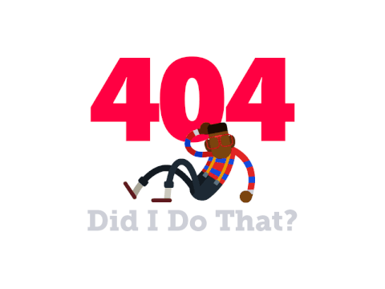

<div class="text-center">
  
  <h2>Sorry. This page doesn't exist</h2>
  <h4 style="padding: 16px 0">You probably ran into one of the pages we removed. Our apologies <br/>Go to our <a href="/">Home Page</a> or <a href="/#contact">Contact Us</a> instead</h4>
</div>
